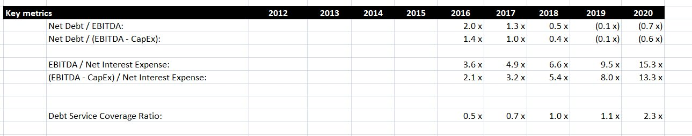
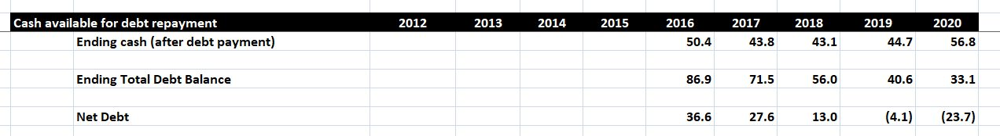
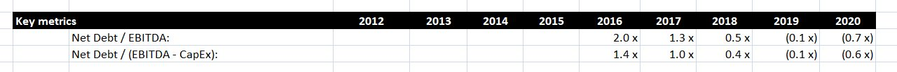
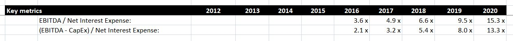
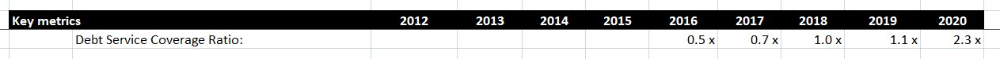

After creating any sort of financial model, you’ll usually want to create some ratios or other metrics that analyse the figures you’ve produced. This is no different when modelling a leveraged buyout, or LBO. In a leveraged buyout, a company will usually acquire a large amount of debt after being bought by another company. It’s important for both companies, and for lenders, that this debt is sustainable, and as a result the metrics we’ll see in this lesson focus on gauging the reliability of the company to repay its new debts.
In this post, we’ll analyse a case where a company called MarkerCo has been bought out in an LBO by a private equity firm, PrivEq. We’ll analyse whether lenders can expect MarkerCo to be able to repay its debts over the years following the transaction. To do this, we’ll create the series of metrics shown below. Note this transaction took place at the start of 2016, so all these numbers are future projections.

Calculating Net Debt
As you can see, several of the metrics above involve the term Net Debt. This is a relatively simple concept and is found by subtracting the ending cash balance from the ending debt balance. In effect, it calculates how much debt would remain if all the company’s cash was used to reduce the debt amount.
If there are multiple forms of debt, then the ending debt balance is the sum of the ending balance for each form. For example, in this LBO, there are two forms of debt: senior notes and subordinated notes. (For more information, on debt types and debt schedules, see this post). Using the figures in the debt schedule, we calculate the following net debt amounts.

In this instance, the senior notes are paid back over time. This reduces the total debt balance and improves the net debt situation. By 2019, net debt is negative because the cash available exceeds the remaining debt balance.
Net Debt Metrics
The first set of metrics focus on Net Debt, and are shown below. Note that we have defined a Custom number format in Excel to display the numbers with an x at the end.

First, we divide Net Debt by EBITDA, which can be found in the Income Statement. This tells us that our net debt is twice the value of earnings in 2016, but this ration falls in the following years as the Net Debt amount reduces.
We also calculate this ratio using EBITDA – CapEx as the denominator. This ratio is useful, as capital expenditure could be put off if necessary to pay off debt. Our figure for CapEx comes from the statement of cash flows, where it is a negative number. As a result, EBITDA – CapEx is larger than EBITDA alone, and the second ratio is therefore smaller in magnitude than the first.
Interest Expense Metrics
The next set of metrics, shown below, focus on the Net Interest Expense.

The first metric divides EBITDA by the Net Interest Expense. As before, EBITDA is in the Income Statement, while the Net Interest Expense can be found in the Debt Schedule. As the Net Interest Expense is recorded as a negative number, we have added a minus sign in front of this formula so that the result is positive. This ratio tells us how many times earning for a year cover the net interest expense for the year. In our example, EBITDA grows from 2016 to 2020, while the Net Interest Expense falls. As a result this ratio increases significantly.
Like before, we also calculate this ratio using EBITDA – CapEx as the numerator. In this case, the magnitude of the ratio is smaller, but the trend is similar.
Debt Service Coverage Ratio
Possibly the most important ratio in this area is the debt service coverage ratio. This compares the amount of cash available to pay down debt with the amount of debt to be paid each year. There are different ways of calculating this, so you may need to use a slightly different formula depending on the client or lender you are dealing with. The formula we will use is Net Operating Income divided by Total Debt Service.
In this instance, we calculate the amount of cash available for debt service by adding the free cash flows, found in the statement of cash flows, and the Net Interest Expense. This is known as the Net Operating Income, and forms the numerator in our debt service coverage formula. For the denominator, we want to calculate the total amount of debt to be serviced each year. We find this by adding the Net Interest Expense to the mandatory payments on each type of debt, found in the debt schedule. We do not consider optional payments when calculating this ratio.
When calculating this formula, note that all the numbers should be positive. Depending on how the numbers are stored in your model, you may need to add some minus signs or use a function like ABS in Excel to ensure this is the case. After we perform this calculation, we get the following results:

As we might expect, this ratio grows over time. However, the value in the early years is very low, staying below 1 until 2018. This indicates that in these early years, operating income is not enough to cover the large interest and principal payments due in these years. In later years, earnings improve and the debt amount reduces, and this is enough to improve the ratio. However, until then, PrivEq is effectively using MarkerCo’s cash balance to pay down debt in the early years after the transaction.
More generally, a debt service coverage ratio below 1.1 is generally not good, and lenders may be reluctant to help finance a transaction under the current terms. The calculations we have done here may prompt a re-evaluation of this particular transaction.
Conclusion
We have now seen how you can analyse a company’s ability to pay off its debts after being acquired in a Leveraged Buyout. The Debt Service Coverage ratio is a particularly important measure of whether a company is earning enough money to fund its debt payments. In the short term, a company might be able to get away with using cash to pay off their debts, but in the long run it’s essential that these ratios show a sustainable future for the company if an LBO is to go ahead.